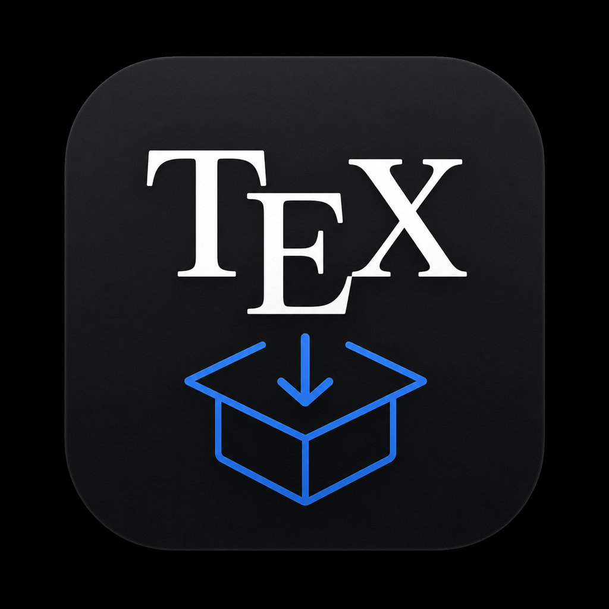

Knurl
TeX diagnostics & package installer for macOS. Drop your .tex project, find out what's missing, install it in one click.
What it does
From compile error to installed package — without leaving the app.
.tex project analysis
Drop a folder or the main file: Knurl maps document classes, packages (\usepackage) and engines in use.
Environment diagnostics
Detects your distribution (TeX Live, BasicTeX, Tectonic), active engines, and anything broken or missing.
CTAN → TL mapping
Translates CTAN package names to their real TeX Live names — built-in overrides plus the official TUG map.
One-click install
Installs missing packages via tlmgr, asking for admin privileges only when actually needed.
Exportable reports
Generates a full report as JSON or Markdown — environment, packages and every action taken.
Native glass UI
Translucent window, floating sidebar and status tiles — built for Ventura and later, in light and dark mode.
How to install
Under a minute.
- Download KnurlClick “Download Knurl” and unzip
Knurl.zip. - Move it to ApplicationsDrag
Knurl.appinto your/Applicationsfolder. - Open it onceRight-click the app → Open. Only needed the first time.
- Drop your projectDrag a
.texfolder onto the window and follow the diagnosis.
xattr -dr com.apple.quarantine Knurl.app